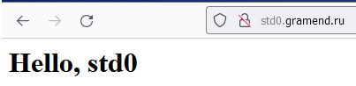
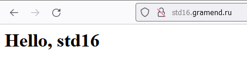
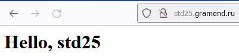
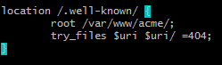
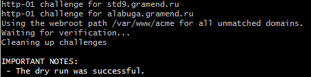
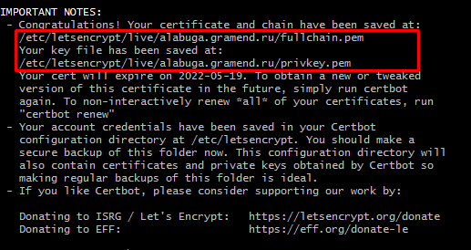
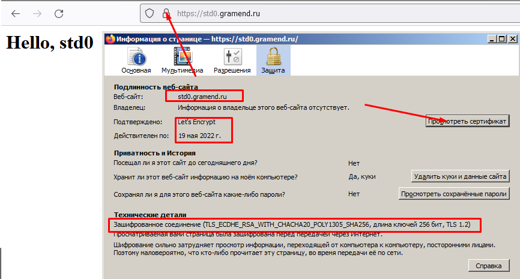
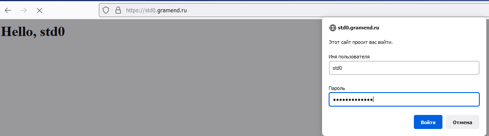

202202161406 подготовка VM для тестирования WorldSkills
Настройка сервера SSH
Стоит тестировать SSH-подключение без отключения SSH-соединения. Так как при ошибки конфигурации вы можете потерять доступ по SSH.
- Конфигурационный файл:
/etc/ssh/sshd_config - Только не забываем скопировать и проверить ssh-ключи (
ssh-copy-id) 2.
2.
systemctl reload sshd- После того, как перепроверим, что всё работает сменим TCP-порт

Настройка сообщения входа
/etc/motd
- Установка
fortune apt install fortune-mod fortunes-ru fortunesecho "/usr/games/fortune" >> /etc/bash.bashrc
Генерация списка студентов и паролей
bash
for i in `seq 0 25`; do
echo "std${i}";
(tr -dc A-Za-z0-9 </dev/urandom | head -c 13 ; echo '') > "std${i}_password".txt
done > students.txt
head students.txt
std1
std2
std3
std4
std5
std6
std7
std8
std9
std10
Создание Пользователей для Участников WS
bash
for i in `seq 0 25`; do
/usr/sbin/useradd -m "std${i}"
cat "std${i}_password".txt "std${i}_password".txt | passwd "std${i}"
done
Установка и настройка nginx
bash
apt-get install nginx
systemctl status nginx

Настройка nginx для Module2 (HTML/JS)
- Сгенерируем базовый конфиг:
``bash
echo "" > /etc/nginx/sites-enabled/jan.ws.conf
for i inseq 0 25`; do
cat >> /etc/nginx/sites-enabled/jan.ws.conf <<HERE
server {
listen 80;
listen [::]:80;
server_name std${i}.gramend.ru;
root /home/std${i}/jan/module2;
index index.html index.htm index;
location /.well-known/ {
root /var/www/acme/;
try_files \$uri \$uri/ =404;
}
location / {
try_files \$uri \$uri/ =404;
}
} HERE done ``` 2. Проверим, что nginx работает как нужно:
``` nginx -t # Проверяем что файл конфигурации ОК systemctl reload nginx # Перезагрузка конфигурации
for i in seq 0 25; do
mkdir -p "/home/std${i}/jan/module2/"
echo "
Hello, std${i}
" > "/home/std${i}/jan/module2/index.html" done ```- Выборочно проверяем:
  
Настройка HTTPS
- Не забываем добавить к
/etc/nginx/sites-enabled/default, чтобы пока не настроеннаяalabuga.gramend.ruтоже прошла WEB-root аутентификацию:  - Будем устанавливать бесплатные HTTPS-сертификаты let's Encrypt, с этим нам поможет https://certbot.eff.org/
apt-get install certbot3.
bash
certbot certonly --dry-run \
--nginx \
-w /var/www/acme/ \
--expand -d alabuga.gramend.ru \
-d std0.gramend.ru \
-d std1.gramend.ru \
-d std2.gramend.ru \
-d std3.gramend.ru \
-d std4.gramend.ru \
-d std5.gramend.ru \
-d std6.gramend.ru \
-d std7.gramend.ru \
-d std8.gramend.ru \
-d std9.gramend.ru \
-d std10.gramend.ru \
-d std11.gramend.ru \
-d std12.gramend.ru \
-d std13.gramend.ru \
-d std14.gramend.ru \
-d std15.gramend.ru \
-d std16.gramend.ru \
-d std17.gramend.ru \
-d std18.gramend.ru \
-d std19.gramend.ru \
-d std20.gramend.ru \
-d std21.gramend.ru \
-d std22.gramend.ru \
-d std23.gramend.ru \
-d std24.gramend.ru \
-d std25.gramend.ru
4. Успех:

5. Теперь можем выпустить SSL-сертификаты, запустив верхнюю команду без --dry-run
6. Отлично, теперь у нас есть сертификат на все сайты:

7. Теперь, переделываем конфигурацию на HTTPS-only:
``bash
echo "" > /etc/nginx/sites-enabled/jan.ws.conf
for i inseq 0 25`; do
cat >> /etc/nginx/sites-enabled/jan.ws.conf <<HERE
server {
listen 80;
listen 443 ssl;
server_name std${i}.gramend.ru;
ssl_certificate /etc/letsencrypt/live/alabuga.gramend.ru/fullchain.pem;
ssl_certificate_key /etc/letsencrypt/live/alabuga.gramend.ru/privkey.pem;
include /etc/letsencrypt/options-ssl-nginx.conf;
ssl_dhparam /etc/letsencrypt/ssl-dhparams.pem;
root /home/std${i}/jan/module2;
index index.html index.htm index;
if (\$scheme != "https") {
return 301 https://\$host\$request_uri;
}
location /.well-known/ {
root /var/www/acme/;
try_files \$uri \$uri/ =404;
}
location / {
try_files \$uri \$uri/ =404;
}
} HERE done ``` 8. Работает:

Аутентификация HTTPS по паролю, чтобы студенты не подглядывали друг у друга
Примечание: Никто не мешает студентам обменятся паролями и дать друг другу доступ, но в этом случае, ответственность за списывание будет на обоих. И штраф будет распространятся на обоих. Поэтому способные студенты заинтересованы, чтобы их работа не "утекала" к одногруппникам.
Гайд: Restricting Access with HTTP Basic Authentication
apt install apache2-utils- Генерируем
.htpasswdдля каждого студента :
bash
mkdir -p auth
for i in `seq 0 25`; do
cat "std${i}_password".txt | htpasswd -ci "auth/std${i}.htpasswd" "std${i}"
done
- Обновляем nginx-конфигурацию:
``bash
echo "" > /etc/nginx/sites-enabled/jan.ws.conf
for i inseq 0 25`; do
cat >> /etc/nginx/sites-enabled/jan.ws.conf <<HERE
server {
listen 80;
listen 443 ssl;
server_name std${i}.gramend.ru;
auth_basic "std${i}’s Area";
auth_basic_user_file /auth/std${i}.htpasswd;
ssl_certificate /etc/letsencrypt/live/alabuga.gramend.ru/fullchain.pem;
ssl_certificate_key /etc/letsencrypt/live/alabuga.gramend.ru/privkey.pem;
include /etc/letsencrypt/options-ssl-nginx.conf;
ssl_dhparam /etc/letsencrypt/ssl-dhparams.pem;
root /home/std${i}/jan/module2;
index index.html index.htm index;
if (\$scheme != "https") {
return 301 https://\$host\$request_uri;
}
location /.well-known/ {
root /var/www/acme/;
try_files \$uri \$uri/ =404;
}
location / {
try_files \$uri \$uri/ =404;
}
} HERE done ```
- Перезагружаем nginx, проверяем:

- При проверке, пришлось переместить директорию с паролями, потому что nginx не мог открыть файлы в папке root:
``` cat /var/log/nginx/error.log
2022/02/18 11:54:29 [crit] 10456#10456: *984 open() "/root/std/auth/std0.htpasswd" failed (13: Permission denied), client: 31.173.165.58, server: std0.gramend.ru, request: "GET / HTTP/1.1", host: "std0.gramend.ru"
apt-get install sudo sudo -u www-data cat auth/std0.htpasswd # так работает sudo -u www-data cat /root/std/auth/std0.htpasswd # А так нет, кто бы мог подумать? chown -R www-data:www-data auth/ chmod -R o-gr auth/ mv auth /auth
+ пересоздать конфиг с новыми путями
```